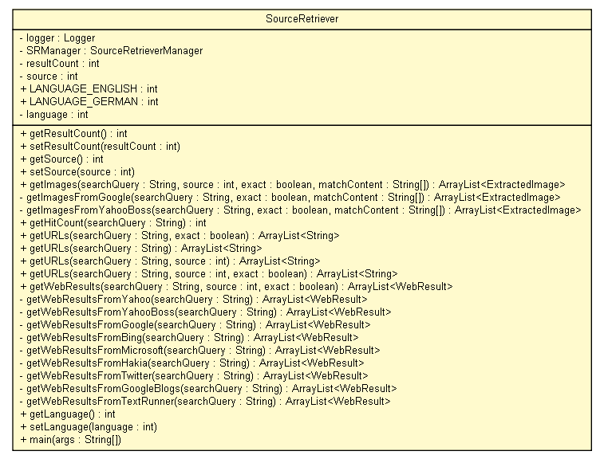

tud.iir.web
Class SourceRetriever

java.lang.Object
 tud.iir.web.SourceRetriever
tud.iir.web.SourceRetriever
public class SourceRetriever
- extends java.lang.Object
The SourceRetriever queries the indices of Yahoo!, Google, Microsoft and Hakia.
|
Method Summary |
int |
getHitCount(java.lang.String searchQuery)
Return number of hits for a given query. |
java.util.ArrayList<ExtractedImage> |
getImages(java.lang.String searchQuery,
int source,
boolean exact,
java.lang.String[] matchContent)
|
private java.util.ArrayList<ExtractedImage> |
getImagesFromGoogle(java.lang.String searchQuery,
boolean exact,
java.lang.String[] matchContent)
|
private java.util.ArrayList<ExtractedImage> |
getImagesFromYahooBoss(java.lang.String searchQuery,
boolean exact,
java.lang.String[] matchContent)
|
int |
getLanguage()
|
int |
getResultCount()
|
int |
getSource()
|
java.util.ArrayList<java.lang.String> |
getURLs(java.lang.String searchQuery)
|
java.util.ArrayList<java.lang.String> |
getURLs(java.lang.String searchQuery,
boolean exact)
|
java.util.ArrayList<java.lang.String> |
getURLs(java.lang.String searchQuery,
int source)
|
java.util.ArrayList<java.lang.String> |
getURLs(java.lang.String searchQuery,
int source,
boolean exact)
|
java.util.ArrayList<WebResult> |
getWebResults(java.lang.String searchQuery,
int source,
boolean exact)
|
private java.util.ArrayList<WebResult> |
getWebResultsFromBing(java.lang.String searchQuery)
TODO Query the Bing API. |
private java.util.ArrayList<WebResult> |
getWebResultsFromGoogle(java.lang.String searchQuery)
|
private java.util.ArrayList<WebResult> |
getWebResultsFromGoogleBlogs(java.lang.String searchQuery)
|
private java.util.ArrayList<WebResult> |
getWebResultsFromHakia(java.lang.String searchQuery)
|
private java.util.ArrayList<WebResult> |
getWebResultsFromMicrosoft(java.lang.String searchQuery)
|
private java.util.ArrayList<WebResult> |
getWebResultsFromTextRunner(java.lang.String searchQuery)
|
private java.util.ArrayList<WebResult> |
getWebResultsFromTwitter(java.lang.String searchQuery)
|
private java.util.ArrayList<WebResult> |
getWebResultsFromYahoo(java.lang.String searchQuery)
|
private java.util.ArrayList<WebResult> |
getWebResultsFromYahooBoss(java.lang.String searchQuery)
|
static void |
main(java.lang.String[] args)
|
void |
setLanguage(int language)
|
void |
setResultCount(int resultCount)
|
void |
setSource(int source)
|
| Methods inherited from class java.lang.Object |
clone, equals, finalize, getClass, hashCode, notify, notifyAll, toString, wait, wait, wait |
logger
private static final org.apache.log4j.Logger logger
SRManager
private SourceRetrieverManager SRManager
resultCount
private int resultCount
source
private int source
LANGUAGE_ENGLISH
public static final int LANGUAGE_ENGLISH
- See Also:
- Constant Field Values
LANGUAGE_GERMAN
public static final int LANGUAGE_GERMAN
- See Also:
- Constant Field Values
language
private int language
SourceRetriever
public SourceRetriever()
getResultCount
public int getResultCount()
setResultCount
public void setResultCount(int resultCount)
getSource
public int getSource()
setSource
public void setSource(int source)
getImages
public java.util.ArrayList<ExtractedImage> getImages(java.lang.String searchQuery,
int source,
boolean exact,
java.lang.String[] matchContent)
getImagesFromGoogle
private java.util.ArrayList<ExtractedImage> getImagesFromGoogle(java.lang.String searchQuery,
boolean exact,
java.lang.String[] matchContent)
getImagesFromYahooBoss
private java.util.ArrayList<ExtractedImage> getImagesFromYahooBoss(java.lang.String searchQuery,
boolean exact,
java.lang.String[] matchContent)
getHitCount
public int getHitCount(java.lang.String searchQuery)
- Return number of hits for a given query.
getURLs
public java.util.ArrayList<java.lang.String> getURLs(java.lang.String searchQuery,
boolean exact)
getURLs
public java.util.ArrayList<java.lang.String> getURLs(java.lang.String searchQuery)
getURLs
public java.util.ArrayList<java.lang.String> getURLs(java.lang.String searchQuery,
int source)
getURLs
public java.util.ArrayList<java.lang.String> getURLs(java.lang.String searchQuery,
int source,
boolean exact)
getWebResults
public java.util.ArrayList<WebResult> getWebResults(java.lang.String searchQuery,
int source,
boolean exact)
getWebResultsFromYahoo
private java.util.ArrayList<WebResult> getWebResultsFromYahoo(java.lang.String searchQuery)
getWebResultsFromYahooBoss
private java.util.ArrayList<WebResult> getWebResultsFromYahooBoss(java.lang.String searchQuery)
getWebResultsFromGoogle
private java.util.ArrayList<WebResult> getWebResultsFromGoogle(java.lang.String searchQuery)
getWebResultsFromBing
private java.util.ArrayList<WebResult> getWebResultsFromBing(java.lang.String searchQuery)
- TODO Query the Bing API.
Maximum top 1,000 results (50 per query).
- Parameters:
searchQuery -
- Returns:
getWebResultsFromMicrosoft
private java.util.ArrayList<WebResult> getWebResultsFromMicrosoft(java.lang.String searchQuery)
getWebResultsFromHakia
private java.util.ArrayList<WebResult> getWebResultsFromHakia(java.lang.String searchQuery)
getWebResultsFromTwitter
private java.util.ArrayList<WebResult> getWebResultsFromTwitter(java.lang.String searchQuery)
getWebResultsFromGoogleBlogs
private java.util.ArrayList<WebResult> getWebResultsFromGoogleBlogs(java.lang.String searchQuery)
getWebResultsFromTextRunner
private java.util.ArrayList<WebResult> getWebResultsFromTextRunner(java.lang.String searchQuery)
getLanguage
public int getLanguage()
setLanguage
public void setLanguage(int language)
main
public static void main(java.lang.String[] args)